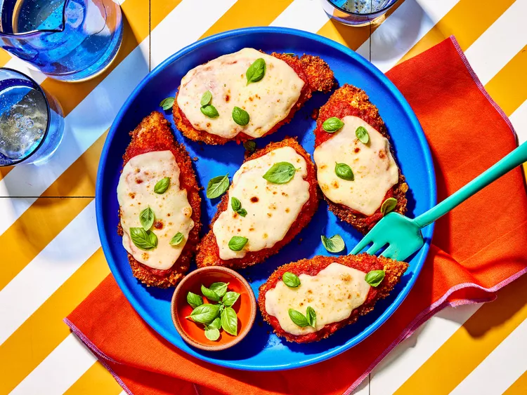
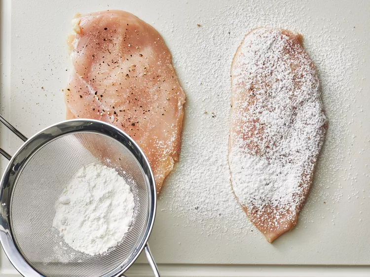
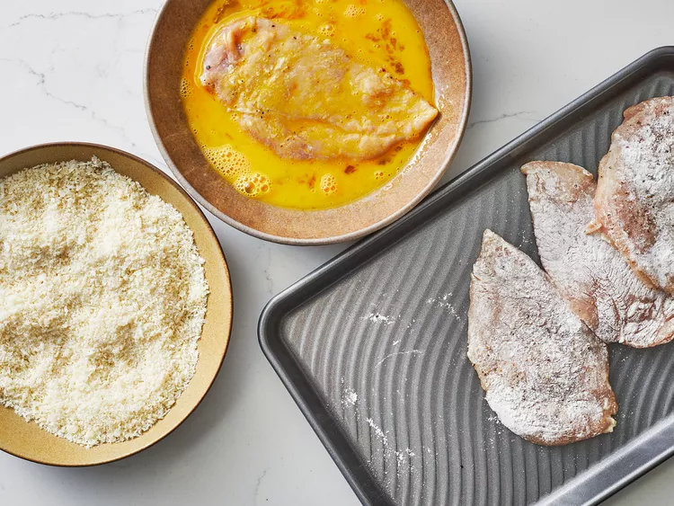
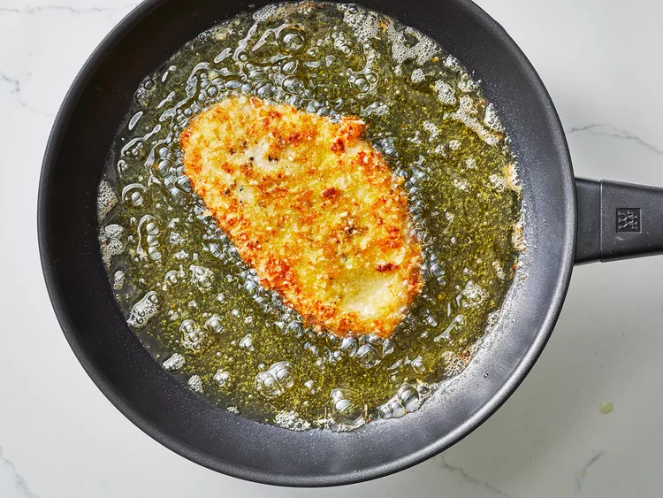

Chicken Parmesan

Credit: Dotdash Meredith Food Studios
Prep Time: 15 mins Cook Time:20 mins Additional Time:10 mins
Total Time:45 mins Servings:4
__________________________________________________________________
Tips for making Chicken Parmesan
Here's a cheat sheet for making the best baked chicken parmesan:
- Pound chicken evenly:Pound the boneless chicken breasts out to an even thickness so they cook evenly.
- Don't skimp on seasoning:Season with salt and pepper generously an skip salting the flour and bread crumbs.
- Add parmesan to bread crumbs:Add finely grated Parmesan cheese to panko bread crumbs to give it an extra crunch and flavor when its the breaded chicken is fried.
- Rest before cooking:Let the breaded chicken rest for about 15 minutes befor frying. This helsp the coating stick more to the chicken breast.
- Less sauce, better texture:Don't drown the breaded and fried chicken in sauce and smother it in cheese. Why make it soggy after going through the work of creating a crisp coating?
- Make sure the oven is hot:Make sure your oven is completely preheated to 450 degrees F(230 degrees C). You'll want the cheese to brown slightly and breading to crisp up before the chicken gets overcooked.
__________________________________________________________________
Ingredients
- 4 skinless, boneless chicken breast halves
- salt and freshly ground black pepper
- 2 large eggs
- 1 cup panko bread crumbs, or more as needed
- ¾ cup freshly grated Parmesan cheese, divided
- 2 tablespoons all-purpose flour, or more if needed
- ½ cup olive oil for frying, or as needed
- ½ cup prepare tomato sauce
- ¼ cup fresh mozzarella, cut into small cubes
- ¼ cup chopped fresh basil
- ½ cup freshly grated provolone cheese
- 2 teaspoons olive oil
__________________________________________________________________
Directions
Step 1
Gather the ingredients. Preheat oven to 450 degrees F (230 degrees C).

Credit: Dotdash Meredith Food Studios
Step 2
Place chicken breasts between two sheets of heavy plastic (resealable freezer bags work well) on a solid, level surface.
Firmly pound chicken with the smooth side of a meat mallet until thickness is ½ - inch.

Credit: Dotdash Meredith Food Studios
Step 3
Thoroughly season the chicken breasts with salt and pepper,
using a sifter or strainer to sprinkle flour over chicken breasts, evenly coating both sides.

Credit: Dotdash Meredith Food Studios
Step 4
Beat eggs in a shallow bowl, and mix bread crumbs and ½ Parmesan cheese in a separate bowl, set aside.
Dip a flour coated chicken
breast in beaten eggs, then to the bread crumb mixture, pressing crumbs into both sides.
Repeat for all chicken then let it rest for 10 to 15 minutes.

Credit: Dotdash Meredith Food Studios
Step 5
Heat ½ inch of olive oil in a large skillet over medium-high heat until it begins to shimmer. Cook chicken in batches, so you don't overcrowd the pan, until golden, about 2 minutes per side. The chicken will finish cooking in the oven.

Credit: Dotdash Meredith Food Studios
Step 6
Transfer chicken to a baking dish, then top each breast with 2 tablespoons of tomato sauce and layer with equal amounts of mozzarella cheese, fresh basil, and provolone cheese. Sprinkle remaining Parmesan over top and drizzle each with ½ teaspoon olive oil.

Credit: Dotdash Meredith Food Studios
Step 7
Bake in the preheated oven until cheese is browned and bubbly and chicken breasts are cooked, 15 to 20 minutes. A thermometer inserted into the center should read at least 165 degrees F (74 degrees C). Let chicken rest briefly before serving.

Credit: Dotdash Meredith Food Studios
__________________________________________________________________
Nutrition Facts
(per serving)
Calories: 471 || Fat: 25g || Carbs: 25g || Protein: 42g
Home